Výrobní vědecký balíček
Výrobní balíček se podobá Logistickému balíčku protože také odemyká pokročilejší způsob přepravy pásů což jsou modré které jsou nejrychlejší, k tomu odemyká nejlepší montovnu, také obohacení uranu a moduly které mění způsob hry. K jeho výrobě máme již všechny suroviny teď jenom je spojit do produktů a poté do balíčku. Je potřeba k dokončení hry.
Ukázka výroby surovin a výroby samotného balíčku
Obrázek ukazuje výrobu modulu produktivity první úrovně z pokročilého a elektrického obvodu
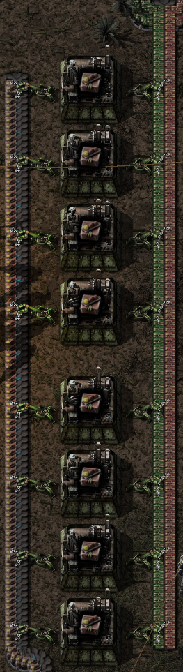{kind=link}
Obrázek ukazuje výrobu kolejí a železných tyčí potřebných k jejich výrobě
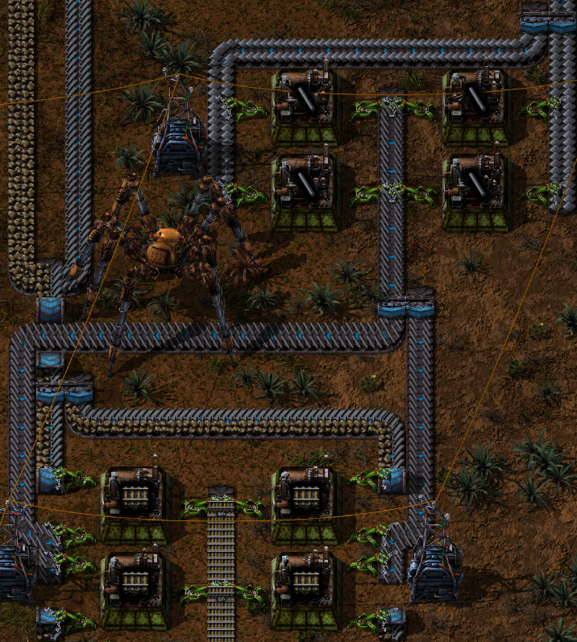{kind=link}
Obrázek ukazuje výrobu elektrických pecí
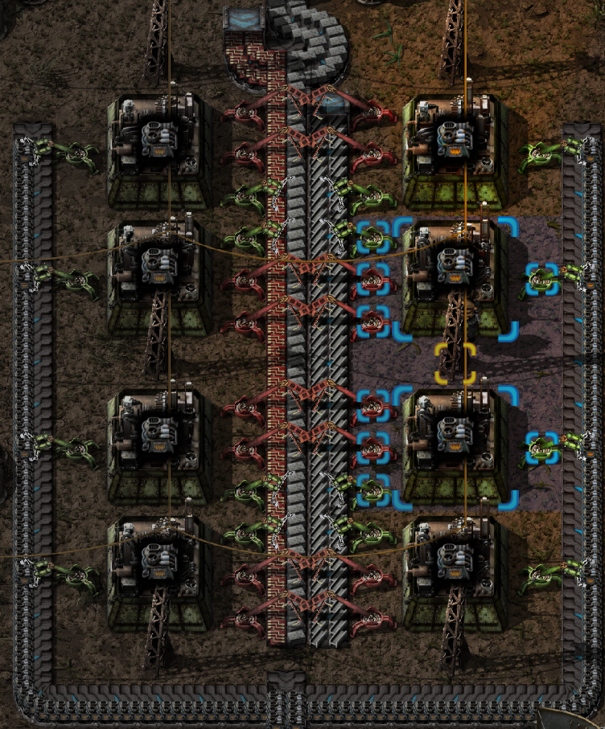{kind=link}
Obrázek ukazuje montovny s modulu pruduktyvity třetí úrovně na výrobu výrobního balíčku
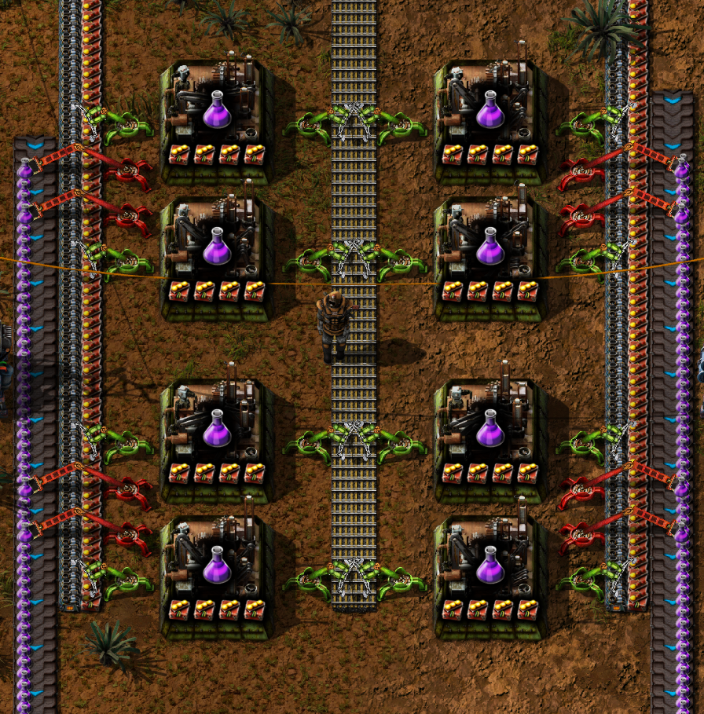{kind=link}
Obrázek ukazuje výzkumný strom výrobního balíčku
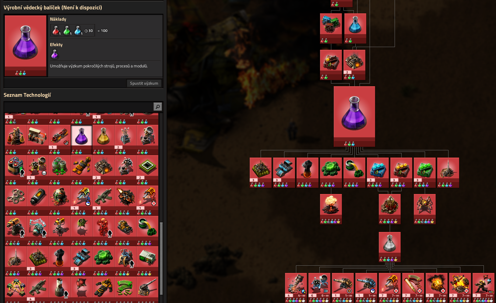{kind=link}
Co vše získáte jeho výzkumem
Obrázek ukazuje nejpokročilejší montovnu ve hře
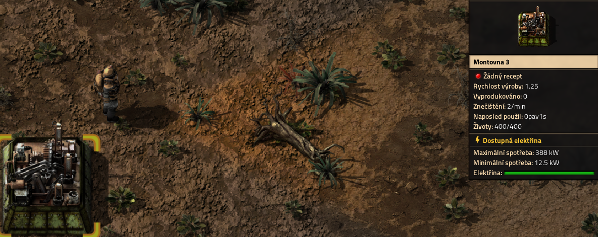{kind=link}
Obrázek ukazuje nejpokročilejší pás, podzemní pás a rozdělovač ve hře
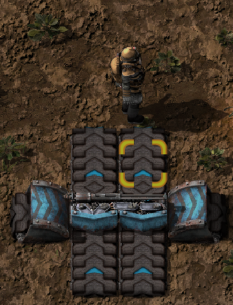{kind=link}
Obrázek ukazuje obohacující proces uranu za účelem většího zisku uranu 235 k výrobě atomových zbrání
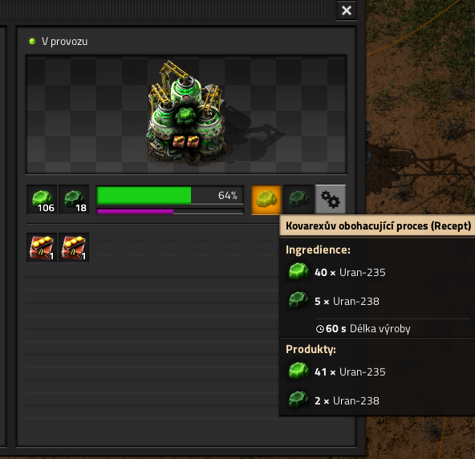{kind=link}
Obrázek ukazuje modul rychlosti třetí úrovně v majáku
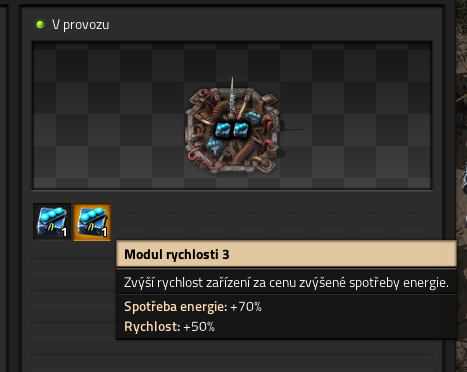{kind=link}
Obrázek ukazuje recept na zkapalnění uhlí
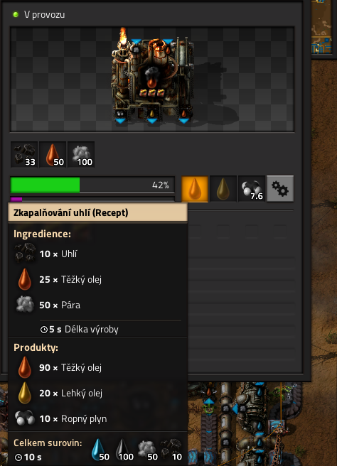{kind=link}
Obrázek ukazuje co dělá maják
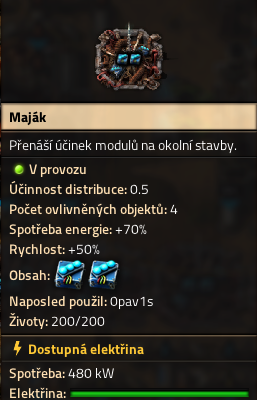{kind=link}